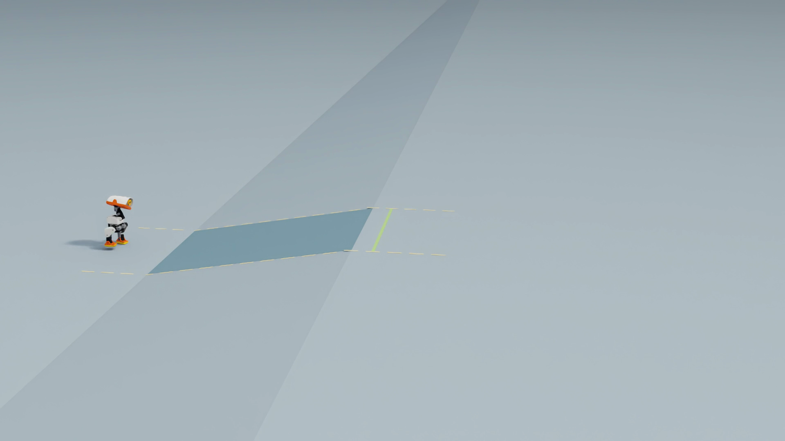

SELF-PACED WORKSHOP
Adapt walking to slopes
Adapt walking to slopes. Explore the concepts, run the lab, and inspect its results.
Start with a testable question
Do not assume the old actor will fail. Hold the policy, command, duration, friction and initial-state distribution fixed while varying slope. Test traversal and balance, not just a single attractive frame.
Scroll horizontally to view the full diagram
Build a flat–ramp–landing scene
The surface has a 0.35 m flat approach, a 1 m horizontal ramp, and a landing. Positive angles ascend; negative angles descend. A continuous collision mesh avoids unintended steps. Visual materials do not determine contact dynamics.


slope = math.tan(math.radians(cfg.slope_deg))
xs = [0.0, 2.35, 3.35, 6.0]
zs = [0.0, 0.0, slope, slope]
vertices = [(x, y, z) for x, z in zip(xs, zs) for y in [0.0, 4.0]]The mesh uses offset local coordinates; the robot spawn corresponds to x = 0 in the equation. Isaac Lab TerrainGenerator and TerrainImporter reuse this geometry for visualization, physics and parallel tasks.
Test the official walking policy first
python3 scripts/workshop.py terrain \
--model models/walk.onnx \
--slope 5 --num-envs 1 --seconds 20 --seed 42001 \
--output outputs/slope-up-05Without --headless this opens Isaac Sim. Use --num-envs 5 --headless for batched evaluation, and test 0, ±5, ±10 and ±15 degrees in separate output directories. The first 2 s are standing; then the command is 0.25 m/s. Actual speed may differ.
Success requires reaching x ≥ 1.45 m within 20 s with lateral error below 0.3 m and staying upright throughout. A fall remains a failure even if the body later slides across the finish. Reports separate reaching, falls and velocity RMSE.
| Slope | Pass | Fall |
|---|---|---|
| 0° | 5/5 | 0/5 |
| +5° | 0/5 | 0/5 |
| -5° | 0/5 | 5/5 |
| +10° | 0/5 | 0/5 |
| -10° | 0/5 | 5/5 |
| +15° | 0/5 | 0/5 |
| -15° | 0/5 | 5/5 |
Each angle uses five lightly perturbed starts. Flat trials pass; uphill trials stall without falling; downhill trials fall. This small baseline identifies an adaptation need, not general reliability.
Why flat-ground experience may not transfer
A slope changes foot clearance, gravity along the surface and usable friction. Insufficient clearance or propulsion can stall ascent; downhill landing and balance changes can cause falls. Survival alone misses stalled traversal.
Continue learning across terrain types
Keep the official ONNX unchanged. Initialize a new actor from its weights and normalization, with a fresh critic and optimizer. Mix 25% flat terrain with ascending and descending terrain. Verify initial actor parity before learning.
python3 scripts/workshop.py train-terrain \
--model models/walk.onnx \
--num-envs 256 --iterations 1000 --seed 43001 \
--output outputs/terrain-training-01Training slopes are tan(α), not degrees: 0.03–0.22 is about 1.7°–12.4°. Training uses pyramidal and inverted slopes; evaluation uses straight ramps and separate seeds.
sub_terrains = {
"flat": MeshPlaneTerrainCfg(proportion=0.25),
"slopes": HfPyramidSlopedTerrainCfg(
proportion=0.375, slope_range=(0.03, 0.22), platform_width=0.7
),
"descending": HfInvertedPyramidSlopedTerrainCfg(
proportion=0.375, slope_range=(0.03, 0.22), platform_width=0.7
),
}The fixed terrain weights retain their original training lineage. Current practice runs use the same full-contact robot as the demonstrations, so their contact configuration differs from the historical training and defines a new experiment. Training is physics-only; inspect exported policies in the shared RTX scene.
Balance and direction both matter
def yaw_rate_tracking(env, std=0.15):
# Match the commanded turn rate without penalizing normal roll/pitch motion.
velocity = env.scene["robot"].data.root_link_ang_vel_b.torch
target = env.command_manager.get_command("base_velocity")[:, 2]
# Squared, normalized error gives a symmetric reward in (0, 1].
return torch.exp(-((velocity[:, 2] - target) / std).square())
cfg.rewards.yaw_precision = RewardTermCfg(
func=yaw_rate_tracking, weight=4.0, params={"std": 0.15}
)python3 scripts/workshop.py train-terrain \
--model models/walk.onnx \
--resume outputs/terrain-training-01/model_999.pt \
--refine-heading --num-envs 256 --iterations 1500 --seed 43002 \
--output outputs/terrain-heading-01
python3 scripts/workshop.py train-terrain \
--model models/walk.onnx \
--resume outputs/terrain-heading-01/model_2498.pt \
--refine-heading --yaw-precision \
--num-envs 256 --iterations 2000 --seed 43003 \
--output outputs/terrain-direction-01Compare both actors with the same benchmark
python3 scripts/workshop.py terrain \
--model models/terrain-walk.onnx \
--slope 5 --num-envs 5 --seconds 20 --seed 49001 --headless \
--output outputs/terrain-evaluation-up-05Use the fixed0.79 MB terrain actor by default. Explicitly select outputs/terrain-direction-01/exported/policy.onnx to test your own export. Chapters1 and7 retain the original walking actor.
Use matched evaluation seeds and angles for both actors. Report flat, uphill and downhill success, falls, tracking error and training time. Stalling is not success, and slope improvements do not justify losing flat-ground ability.
| Slope | Official pass | Terrain pass | Terrain falls | Terrain speed RMSE |
|---|---|---|---|---|
| 0° | 5/5 | 5/5 | 0/5 | 0.094 m/s |
| +5° | 0/5 | 5/5 | 0/5 | 0.105 m/s |
| -5° | 0/5 | 5/5 | 0/5 | 0.089 m/s |
| +10° | 0/5 | 5/5 | 0/5 | 0.122 m/s |
| -10° | 0/5 | 2/5 | 0/5 | 0.090 m/s |
| +15° | 0/5 | 0/5 | 5/5 | 0.210 m/s |
| -15° | 0/5 | 0/5 | 5/5 | 0.179 m/s |
Each angle uses five environments with fixed seed 49001, excluded from model training and selection, and official full-body contacts for both actors. Reusing this seed after correcting the support surface does not create additional independent samples. Success criteria are unchanged. The table averages each environment’s speed RMSE over moving-command samples before its first fall. The lateral gate applies at arrival, not continuously. This small sample does not establish general slope reliability. See the per-environment results.
The terrain actor passes all five trials on flat ground, ±5° and +10°. At −10° it stays upright in all five but misses the arrival region three times; it falls in every ±15° trial. Stability, direction and completion are distinct metrics. Five trials per angle cannot isolate a parameter effect. Inspect failures before changing training; the shared interface does not qualify this actor for football approach and kick handoff.
Check your understanding
Why evaluate on terrain geometry different from training?
Show explanation
To test transfer to new geometry and initial states. Both actors share evaluation conditions; tuning on those results makes them development data.
What else can this platform teach?
You changed the world with Isaac Sim, adapted a policy in Isaac Lab and tested its scope. Next, explore community jumping and balancing tasks.